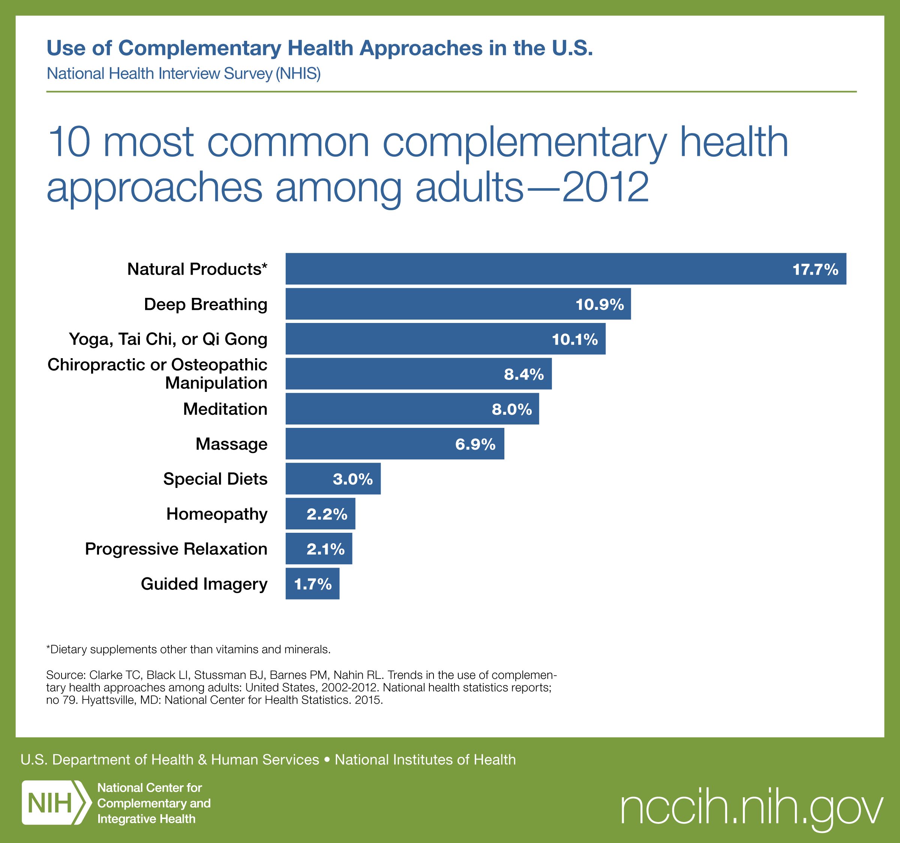
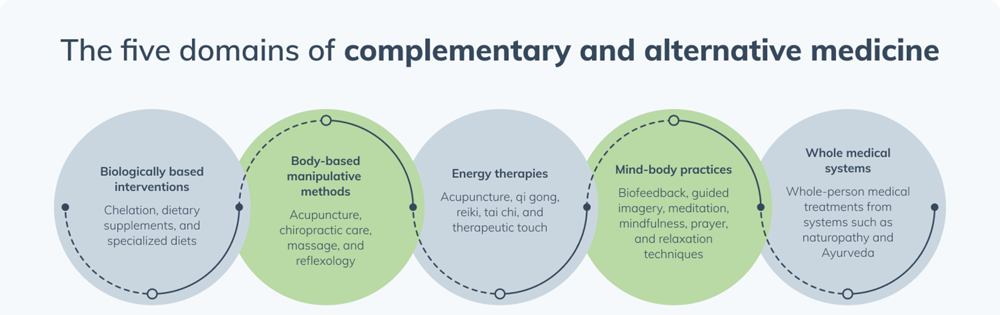
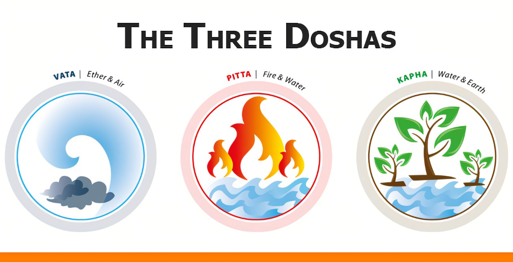
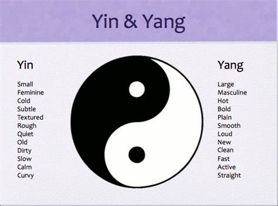
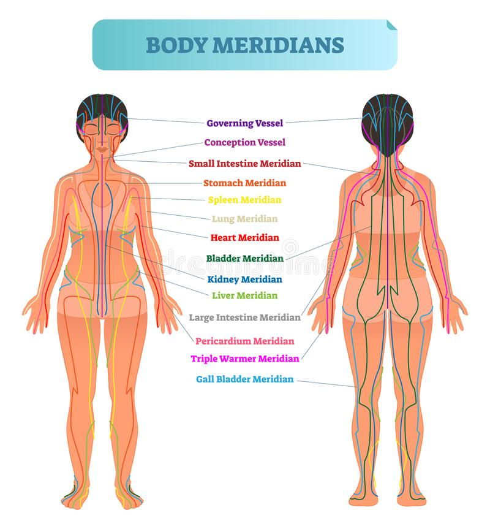
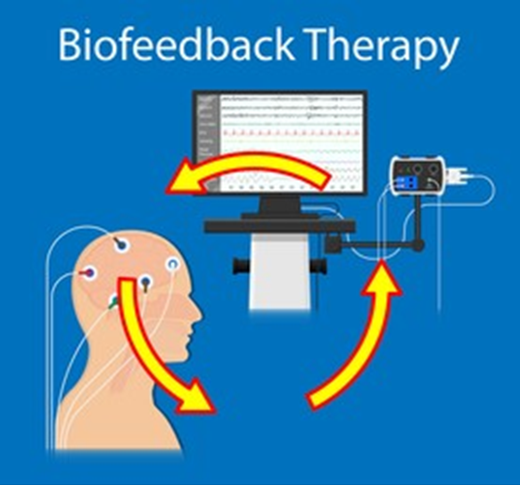
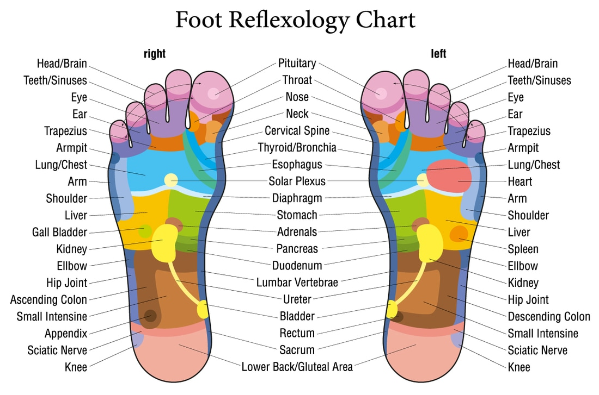

1 · Introduction to Complementary and Alternative Medicine
Instructional Objectives
- Define complementary and alternative medicine.
- Describe the rationale for selecting complementary and alternative medicine over allopathic medicine.
- Examine the five domains of complementary and alternative medicine.
- Discuss the National Center for Complementary and Alternative Medicine (NCCAM).
- Define hypnosis, meditation, imagery, relaxation therapy, and biofeedback.
- Describe appropriate patient education for common complementary and alternative medicine.
1.1 Defining the Landscape IO 1
Conventional healthcare is the system in which healthcare professionals — physicians, physician assistants, nurse practitioners, pharmacists, physical therapists, and nurses — treat symptoms and diseases using drugs, radiation, or surgery. It travels under several other names, all of which mean the same thing: allopathic medicine, biomedicine, mainstream medicine, orthodox medicine, and Western medicine.
Complementary and alternative medicine refers to a broad range of health practices, approaches, and products that are not traditionally part of conventional Western medicine. The single most testable distinction in this lecture is the one between the two halves of that phrase:
| Term | Defining relationship to conventional care |
|---|---|
| Complementary medicine | Used together with conventional medicine |
| Alternative medicine | Used in place of conventional medicine |
Integrative medicine is a patient-centered, whole-person approach that combines conventional medicine with evidence-based complementary therapies. It emphasizes wellness, prevention, and the therapeutic relationship, and uses multiple treatment modalities when appropriate — for example medication plus physical therapy plus yoga or acupuncture.
Functional medicine is also whole-person and patient-centered, but its organizing idea is different: it focuses on the potential underlying contributors to disease, weighing lifestyle, nutrition, environment, genetics, and psychosocial factors. Prevention uses nutrition, exercise, sleep, and smoking cessation; treatment uses dietary change, stress reduction, physical activity, and evidence-based supplements.
| Functional medicine | Naturopathic medicine |
|---|---|
| An approach to patient care | A healthcare profession |
| Can be used by physicians, osteopathic physicians, physician assistants, nurse practitioners, and others | Practiced by naturopathic doctors |
| Focuses on identifying contributors to disease | Emphasizes natural therapies and the body's healing capacity |
| Often uses nutrition, exercise, sleep, and stress management | Often uses nutrition, herbs, supplements, hydrotherapy, and acupuncture |
Hippocrates, often called the Father of Medicine, anchors the historical end of this material. He is credited with “Let food be thy medicine,” and the original Hippocratic Oath commits the physician to order the best diet for the sick according to judgment and means, and to take care that patients suffer no hurt or damage.
The National Center for Complementary and Integrative Health is the federal government's lead agency for scientific research on complementary and integrative health approaches. It sits within the National Institutes of Health, inside the United States Department of Health and Human Services. It conducts and supports research on the safety, effectiveness, and mechanisms of complementary health practices, and provides evidence-based information for patients and healthcare professionals. Note what it is not: it does not license practitioners, approve products, or accredit training programs.
1.2 Why Patients Choose These Approaches IO 2
The lecture gives six reasons for the popularity of complementary and alternative medicine:
- Perceived as natural and safe
- Desire for greater control over personal health
- Dissatisfaction with conventional treatments or outcomes
- Interest in a more holistic, patient-centered approach
- Easy access to information, products, and services
- Value placed on the time, attention, and therapeutic relationship offered by practitioners

1.3 The Clinician's Role and Patient Counseling IO 6
Many clinicians receive limited formal training in these therapies, which makes a deliberate approach more important rather than less. The lecture asks clinicians to:
- Maintain an open, respectful, and nonjudgmental dialogue
- Routinely ask patients about complementary and alternative use
- Evaluate these therapies using the best available scientific evidence
- Direct patients to reliable sources — the national center, the National Institutes of Health, the Centers for Disease Control and Prevention, and peer-reviewed literature
- Monitor for safety, including herb-drug and supplement-drug interactions
The lecture then gives a checklist of questions to raise with a patient who is considering a therapy. These are high-yield precisely because they are a list:
| Ask… | Why it matters |
|---|---|
| Is there research to support the therapy? | Separates evidence from testimonial |
| Does it require stopping conventional treatment? | Converts complementary use into alternative use, the higher-risk pattern |
| Are there substantial side effects? | “Natural” does not mean inert |
| Does the practitioner make unfounded claims, such as curing cancer? | A direct marker of a predatory offering |
| Does treatment require travel to another country? | Removes the patient from any accountable system of care |
| Is the practitioner licensed by the state for that specific therapy? | Licensure requirements vary by state and by therapy |
| Is it offered by an established medical institution? | A reassuring rather than alarming feature |
| How expensive is it, and are there out-of-pocket costs? | Financial harm is still harm |
1.4 The Five Domains IO 3
The teaching framework for this lecture divides complementary and alternative medicine into five domains. Learn them as a set — the exam is far more likely to ask which domain a therapy belongs to than to ask for a definition in isolation.

1.5 Whole Medical Systems IO 3
Whole medical systems are practices built on complete systems of theory and practice that evolved separately from conventional medicine, many of them centuries before it. Each has a defined philosophy and its own explanation of disease, diagnosis, and therapy. The four examples are Ayurveda, homeopathy, naturopathy, and traditional Chinese medicine.
Ayurveda is the traditional medical system of India and one of the world's oldest healing systems, still an important component of healthcare there. The name comes from the Sanskrit ayur (life) and veda (knowledge or science). Health is believed to result from balance among the body's fundamental energies, the doshas; illness is believed to arise when they become imbalanced. Doshas derive from combinations of five elements — space (ether), air, fire, water, and earth — and most people are believed to have one dominant dosha.

After determining the balance of doshas, the practitioner designs an individualized plan using diet, herbs, massage, meditation, yoga, and internal cleansing (therapeutic elimination). Research is limited to studies of individual herbs such as turmeric and ashwagandha rather than of the complete system.
Homeopathy was developed in Germany in the late 1700s. The name comes from the Greek homeo (like) and pathos (disease). It rests on two theories:
| Theory | Claim | Lecture's example |
|---|---|---|
| Law of similars (“like cures like”) | A substance producing symptoms in healthy people can treat similar symptoms in illness | Cutting onions causes burning, teary eyes and a runny nose, so Allium cepa (onion) is used for colds or hay fever |
| Law of minimum dose | The lower the dose, the greater the therapeutic effect | Remedies undergo repeated dilution and shaking, a process called succussion |
Products may be derived from plants (red onion, poison ivy, belladonna), minerals (arsenic), or animals (crushed whole bees). The theory proposes that remedies retain therapeutic properties despite extensive dilution.
Naturopathy is founded on the healing power of nature and the body's inherent capacity for healing. It emphasizes prevention, a healthy lifestyle, and treatment of the whole person, and focuses on finding the cause of disease rather than only treating symptoms. Its therapies include hydrotherapy, dietary counseling, nutritional supplementation, medicinal herbs, acupuncture, physical therapies such as heat and cold, mind-body therapies, and exercise therapy.
Traditional Chinese medicine originated in China and evolved over thousands of years. Common practices include acupuncture, herbal medicine, dietary therapy, massage, tai chi, and qigong. A vital force of life called Qi (pronounced “chee”) is believed to flow along pathways called meridians, sometimes described as an energy highway. Disease is thought to result from disruption or imbalance in the flow of Qi, and health is believed to depend on balance between the opposing and complementary forces of Yin and Yang. Humans are understood as interconnected with nature, and five elements — earth, fire, water, wood, and metal — form the basis of many concepts.


Several practices have been evaluated in clinical studies. Acupuncture and tai chi may improve quality of life and help manage certain pain conditions. Evidence for Chinese herbal products varies by product and condition, and some have been found to contain heavy metals, pesticides, and microorganisms. Herb-drug interactions should be considered when counseling patients.
1.6 Mind-Body Medicine IO 5
Mind-body medicine focuses on the interactions between the brain, mind, body, and behavior and their influence on health. Scientific evidence supports benefits for several of these interventions, and many are now integrated into conventional healthcare — used for chronic pain, anxiety and stress-related disorders, insomnia, headache, and cancer-related symptoms. Behavioral, psychologic, and spiritual techniques are used to reduce symptoms, improve coping, and enhance quality of life.
Objective 5 asks you to define five specific techniques, so they are worth holding side by side:
| Technique | Definition |
|---|---|
| Biofeedback | Electronic monitoring devices give feedback about physiologic functions so the patient learns to control them; principle is “anything that can be measured can be changed” |
| Guided imagery | Uses one or more senses to create a detailed mental experience (visualization is narrower: “seeing” images in the mind's eye) |
| Hypnosis | A state of focused attention and reduced peripheral awareness with an enhanced capacity for response to suggestion |
| Meditation | Intentionally focusing attention and awareness |
| Relaxation therapy | Promotes the relaxation response, which counteracts the physiologic effects of stress |

Monitored functions include heart rate, blood pressure, muscle activity, skin temperature, breathing patterns, and brain activity. Sensors are placed on the body, information is displayed in real time visually or audibly, and patients learn to modify their responses through guided practice. Multiple sessions are typically required. Evidence supports biofeedback as an adjunctive therapy for migraine, tension-type headache, stress-related disorders, and some pelvic floor dysfunctions. The goal is self-regulation without reliance on the monitoring equipment.
| Biofeedback type | Sensor placement | Indications |
|---|---|---|
| Electromyographic | Skin, detecting electrical activity related to muscle tension | Tension-type headache, migraine, physical rehabilitation, pelvic floor dysfunction and incontinence |
| Breathing | Chest and abdomen | Anxiety and stress management; develops slower, deeper diaphragmatic breathing |
Hypnosis deserves special attention because the lecture spends a slide on myths. Clinical hypnotherapy uses guided relaxation, focused attention, and therapeutic suggestion. The exact mechanism is poorly understood, and individuals vary in responsiveness. Indications include acute and chronic pain, anxiety, stress and phobias, irritable bowel syndrome, nausea and vomiting, procedure-related distress, habit disorders, insomnia, and adjunctive support during childbirth.
| Myth | Reality |
|---|---|
| Hypnosis is only entertainment | Clinical hypnosis is a therapeutic technique used as an adjunct to medical and behavioral treatment |
| People lose consciousness or memory | Most individuals remain aware and remember the session |
| The therapist controls the patient | People cannot be forced to act against their values or wishes |
| Hypnosis is the same as sleep | Hypnosis is a state of focused attention, not sleep |
Meditation may help reduce stress, anxiety, chronic pain, and insomnia, and can improve coping and quality of life in chronic illness. It works by promoting a physiologic relaxation response, increasing awareness of thoughts, emotions, and behaviors, and reducing automatic reactions to stress. The two most commonly studied forms are:
- Transcendental meditation — silently repeating a mantra, traditionally 20 minutes twice daily; studied for stress, anxiety, and cardiovascular health.
- Mindfulness meditation — being intensely aware of what one is sensing and feeling in the moment, without interpretation or judgment; often practiced through mindful breathing.
Relaxation therapy may be combined with meditation, guided imagery, or hypnotherapy. The relaxation response is associated with slower breathing, decreased heart rate, and lower blood pressure. Techniques include progressive muscle relaxation (systematically tensing and relaxing muscle groups to recognize and reduce tension) and guided imagery (for example a beach: the smell of salt water, the sound of waves, the warmth of the sun).
1.7 Biologically Based Practices IO 3
Biologically based practices use naturally occurring substances to promote health or manage disease: botanical medicine, natural products and supplements, chelation therapy, and diet therapies. Benefits and risks vary, and evidence, product quality, and potential drug interactions should be evaluated before use.
Botanical medicine is the use of plants or plant extracts for medicinal purposes, consisting of plant materials, algae, macroscopic fungi, or combinations. Forms include solutions such as tea, powders, tablets, capsules, elixirs, topicals, and injections.
Dietary supplements are among the most commonly used complementary health approaches and are widely available without a prescription. Common products include vitamins, minerals, probiotics, botanicals, and specialty supplements. Patients often use them without discussing them with healthcare professionals, so potential benefits, adverse effects, and drug-supplement interactions must be actively considered.
Chelation therapy works by a defined mechanism: chelating drugs bind with metals and enhance their excretion from the body. Established medical uses include lead poisoning, iron overload, and other heavy metal toxicities. Common environmental exposures are lead (old paint, plumbing), arsenic (well water, rice), and mercury (fish).
Diet therapies are specialized dietary approaches such as Mediterranean, plant-based, and intermittent fasting patterns. They may support prevention and management of chronic disease and are often used to promote overall wellness. Evidence varies by dietary pattern and clinical condition, and nutritional adequacy plus patient-specific factors should be considered before recommending change.
1.8 Manipulative and Body-Based Practices IO 3
These practices focus on the musculoskeletal system and soft tissues — bones, joints, muscles, and connective tissues — using hands-on techniques to improve function, reduce pain, and promote well-being. The lecture lists chiropractic, osteopathic manipulation, cupping, massage, reflexology, and gua sha.
| Practice | What it involves | Notes and evidence |
|---|---|---|
| Chiropractic | Spinal manipulation and other manual therapies for musculoskeletal conditions, especially of the spine | May also use exercise therapy, rehabilitation, heat and cold, massage, and lifestyle counseling |
| Osteopathic manipulative treatment | Hands-on techniques to diagnose, treat, and support recovery | Commonly applied to low back and neck pain |
| Cupping | A vacuum is created inside a cup placed on skin; suction elevates skin and underlying tissue | Thought to increase local blood flow; evidence limited, benefits primarily short term |
| Massage | Manipulation of the body's soft tissues | Practiced in most cultures throughout human history; types include Swedish, deep tissue, hot stone |
| Reflexology | Pressure applied to specific areas of feet, hands, or ears | Practitioners believe these areas correspond to specific organs or systems; evidence limited and inconsistent |
| Gua sha (scraping, coining, spooning) | Repeated strokes with a smooth-edged instrument | May increase local blood flow and reduce muscle tension; used for neck and back pain; evidence limited |

1.9 Energy Therapies IO 3
Energy therapies are based on the belief that biofields — energy fields — influence health and healing. Many traditions describe a vital life force such as Qi thought to flow through the body, and some therapies aim to manipulate these proposed fields to promote healing. Examples are Reiki, therapeutic touch, and acupuncture.
| Therapy | What it involves | Evidence per the lecture |
|---|---|---|
| Acupuncture | Insertion of thin needles into specific points; in traditional Chinese medicine, believed to influence the flow of Qi along meridians | One of the most widely used and studied; modern research suggests it may influence pain-processing pathways and benefit selected pain and symptom-management applications |
| Reiki | A biofield therapy; practitioners believe energy can be directed through the hands, placed lightly on or just above the body | Commonly used for relaxation, stress reduction, and well-being; evidence for specific clinical benefits remains limited and inconclusive |
| Tai chi | Slow, controlled movements with breathing and focused attention, based on balancing Qi; often called “meditation in motion” | May improve balance, physical function, and overall well-being |